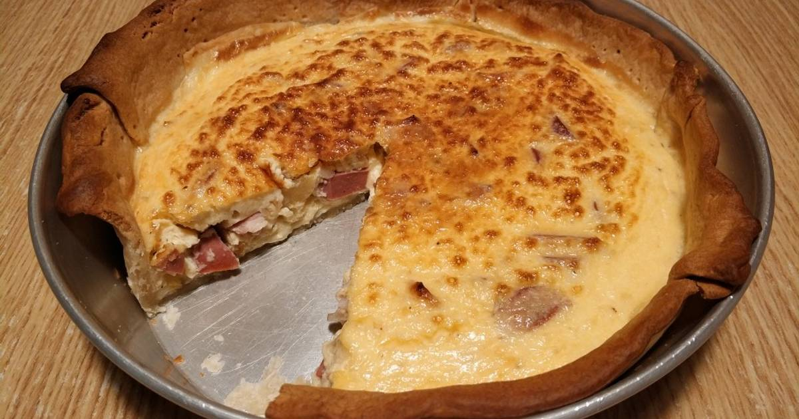

Quiche de bacon y jamón york
Una deliciosa quiche francesa.

Ingredientes
Bacon
Jamón york
Huevos
Nata
Masa quebrada
Elaboración
Preparar la masa.
Mezclar los ingredientes.
Hornear 40 minutos.
← Volver al índice